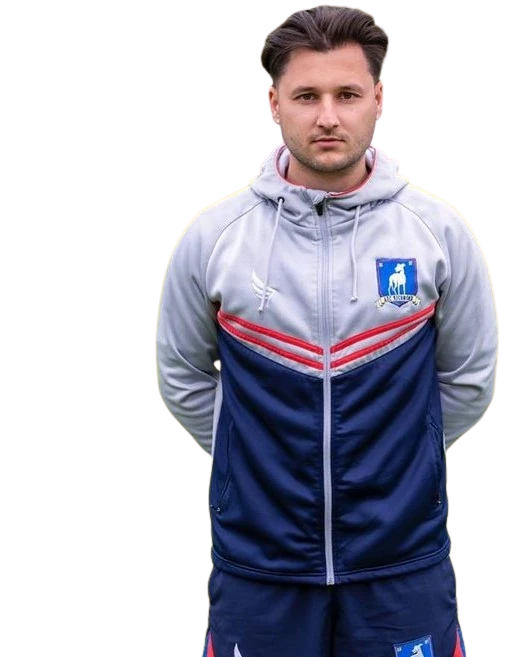

2
← Back to squad
ArloDixon
- Position
- Right Back
- Squad number
- 2
- Nationality
- English
- Birthplace
- England
- Height
- 5'7"
- Former clubs
- Burnley, Leicester
Arlo Dixon is an English right-back and a long-serving member of AFC Richmond's first-team squad. Wearing the number 2 shirt, Dixon provides energy and defensive reliability on the right side of Richmond's back line.
A consistent member of the squad, Arlo is regularly seen alongside his teammates in training, matches and club activities. His role as a full-back allows him to contribute both defensively and in supporting Richmond's attacks from wide areas.
Before joining AFC Richmond, Dixon played for Burnley and Leicester. His experience, work rate and familiarity with the club have made him a dependable member of the Greyhounds' squad.